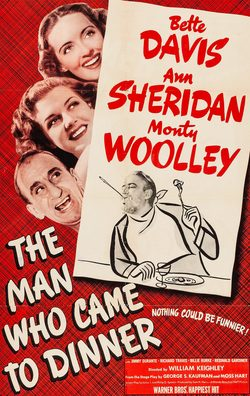

The Man Who Came to Dinner
1941 film by William Keighley
The Man Who Came to Dinner is a 1941 American screwball comedy film directed by William Keighley, and starring Bette Davis, Ann Sheridan and, as the titular character, Monty Woolley. The screenplay by Julius J. and Philip G. Epstein is based on the 1939 play by George S. Kaufman and Moss Hart. The supporting cast features Jimmy Durante, Richard Travis, Billie Burke, and Reginald Gardiner.
Trivia
- Four of the leading characters are based on real-life personalities.
- The screen test was exhibited at the Museum of Modern Art in the early 21st century prior to a screening of the film, making the reason for Davis' subsequent rage at the studio's decision not to cast the superb Barrymore quite apparent.
- Welles would later play Whiteside 30 years later in a television adaptation of the play.
Previous Showings
6 Runs • 4 Festivals
Original Billings: 1 run (April 12, 1942)
Original Run: April 12, 1942 (Sunday - Tuesday)
All runs on record (6):
- April 12, 1942 (Sunday - Tuesday)Bette Davis, Monty Wooley
- September 4 - 6, 1991w/ All About Eve
- September 11 - 14, 2004Summer 2004: Sixty-one Classic Movies, including 10 with Ronald Reagan and 9 Silw/ All About Eve
- February 5 - 6, 2009Winter 2009w/ Christmas in July
- October 5 - 7, 2018Bette Davisw/ The Working Man
- December 14 - 15, 2023Holiday Favorites plus Deanna Durbinw/ The Bishop's Wife